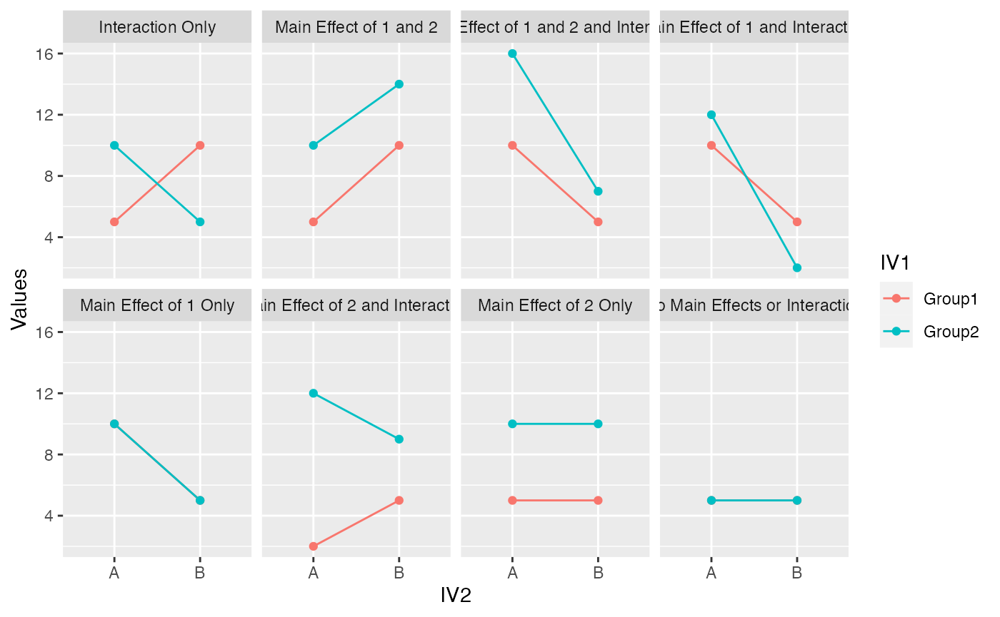

Lab7
Gaines
3/21/2022
Lab7.RmdThere are four problems each worth 3 points. Choose two of the four. If you complete more than two, then you will receive bonus points.
1. Explain the concept of main effects and interactions with an example using R. For example, this could include a definition of main effects and interactions and a figure depicting main effects and an interaction along with an explanation of the patterns for each. A major point of this problem is for you to to engage in the task of developing an explanation of these concepts that would 1) be helpful for you to understand the concepts, and 2) could be helpful for others to understand these concepts. (3 points)
2. Complete the 2x2 factorial lab found here https://crumplab.github.io/statisticsLab/lab-10-factorial-anova.html, up to section 10.4.8. More specifically, your task is to follow that lab exercise to load in the data, transform the data into long-format, conduct a 2x2 between subjects ANOVA, and write a short results section reporting the main effects and interaction. (3 points)
## ── Attaching packages ─────────────────────────────────────── tidyverse 1.3.1 ──## ✓ ggplot2 3.3.5 ✓ purrr 0.3.4
## ✓ tibble 3.1.6 ✓ dplyr 1.0.7
## ✓ tidyr 1.2.0 ✓ stringr 1.4.0
## ✓ readr 2.0.2 ✓ forcats 0.5.1## ── Conflicts ────────────────────────────────────────── tidyverse_conflicts() ──
## x dplyr::filter() masks stats::filter()
## x dplyr::lag() masks stats::lag()##
## Attaching package: 'data.table'## The following objects are masked from 'package:dplyr':
##
## between, first, last## The following object is masked from 'package:purrr':
##
## transpose
library(dplyr)
library(ggplot2)
library(tidyr)
all_data <- fread('https://raw.githubusercontent.com/CrumpLab/statisticsLab/master/data/stroop_stand.csv')
RTs <- c(as.numeric(unlist(all_data[,1])),
as.numeric(unlist(all_data[,2])),
as.numeric(unlist(all_data[,3])),
as.numeric(unlist(all_data[,4]))
)
Congruency <- rep(rep(c("Congruent","Incongruent"),each=50),2)
Posture <- rep(c("Stand","Sit"),each=100)
Subject <- rep(1:50,4)
stroop_df <- data.frame("Subject","Congruency","Posture","RTs")
library(tidyr)
stroop_long<- gather(all_data, key=Condition, value=RTs,
congruent_stand, incongruent_stand,
congruent_sit, incongruent_sit)
new_columns <- tstrsplit(stroop_long$Condition, "_", names=c("Congruency","Posture"))
stroop_long <- cbind(stroop_long,new_columns)
stroop_long <- cbind(stroop_long,"Subject"=rep(1:50,4))
#ANOVA
aov_out<-aov(RTs ~ Congruency*Posture, stroop_long)
summary_out<-summary(aov_out)
summary_out## Df Sum Sq Mean Sq F value Pr(>F)
## Congruency 1 576822 576822 43.734 3.49e-10 ***
## Posture 1 32303 32303 2.449 0.119
## Congruency:Posture 1 6560 6560 0.497 0.481
## Residuals 196 2585080 13189
## ---
## Signif. codes: 0 '***' 0.001 '**' 0.01 '*' 0.05 '.' 0.1 ' ' 1A two-way ANOVA was performed to analyze the effect of Congruency (if the word was the color it described or not) and Posture (sitting or standing) on reaction times. A two-way ANOVA revealed that there was not a statistically significant interaction between the effects of Congruency and Posture (F(1, 1) = 0.4974029, p = 0.4814808).
Simple main effects analysis showed that Congruency did have a statistically significant effect on reaction times (p = 3.4905318^{-10}), with words which were they color they described resulting in improved (lower) reaction times.
Simple main effects analysis showed that Posture did not have a statistically significant effect on reaction times (p = 0.119195). These are visualized in Figure 1:
##plot
plot_means <- stroop_long %>%
group_by(Congruency,Posture) %>%
summarise(mean_RT = mean(RTs),
SEM = sd(RTs)/sqrt(length(RTs)))## `summarise()` has grouped output by 'Congruency'. You can override using the
## `.groups` argument.
ggplot(plot_means, aes(x=Posture, y=mean_RT, group=Congruency, fill=Congruency))+
geom_bar(stat="identity", position="dodge")+
geom_errorbar(aes(ymin=mean_RT-SEM, ymax=mean_RT+SEM),
position=position_dodge(width=0.9),
width=.2)+
theme_classic()+
coord_cartesian(ylim=c(700,1000))
3. In chapter 10 of Crump et al. (2018), there is a discussion of patterns of main effects and interactions that can occur in a 2x2 design, which represents perhaps the simplest factorial design. There are 8 possible outcomes discussed https://crumplab.github.io/statistics/more-on-factorial-designs.html#looking-at-main-effects-and-interactions. Examples of these 8 outcomes are shown in two figures, one with bar graphs, and one with line graphs. Reproduce either of these figures using ggplot2. (3 points) Exciting!
#Simulate the data
ChartTitle<-c("No Main Effects or Interaction","Interaction Only","Main Effect of 2 Only", "Main Effect of 2 and Interaction","Main Effect of 1 Only", "Main Effect of 1 and Interaction","Main Effect of 1 and 2", "Main Effect of 1 and 2 and Interaction")
ChartTitles<-rep(ChartTitle, each=4)
IV1<-rep(c("Group1","Group2"), times = 16)
IV2<-rep(c("A","A","B","B"), times = 8)
Values<-c(5,5,5,5,5,10,10,5,5,10,5,10,2,12,5,9,10,10,5,5,10,12,5,2,5,10,10,14,10,16,5,7)
reproducegraph<-data.frame(ChartTitles,IV1,IV2,Values)
ggplot(reproducegraph, aes(x = IV2, y = Values, color = IV1)) +
geom_line(aes(group=IV1)) +
geom_point()+
facet_wrap(~ChartTitles, nrow=2,ncol=4)
4. In the conceptual section of this lab we used an R simulation to find the family-wise type I error rate for a simple factorial design with 2 independent variables. Use an R simulation to find the family-wise type I error rate for a factorial design with 3 independent variables. (3 points)
(did not do bonus)
5. Show that a 2x2 factorial ANOVA can be accomplished by using a one-factor ANOVA with three linear contrasts. (3 points)